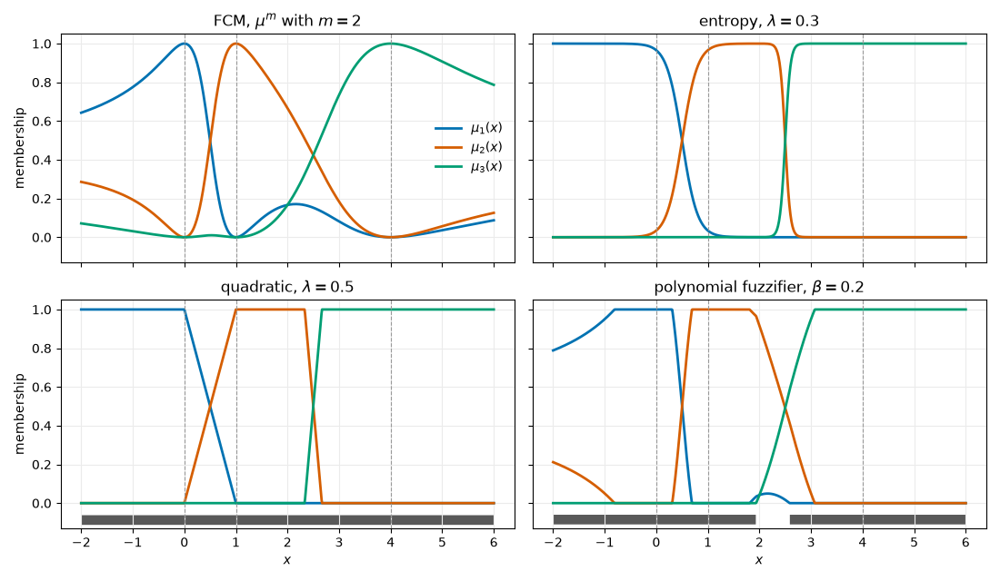
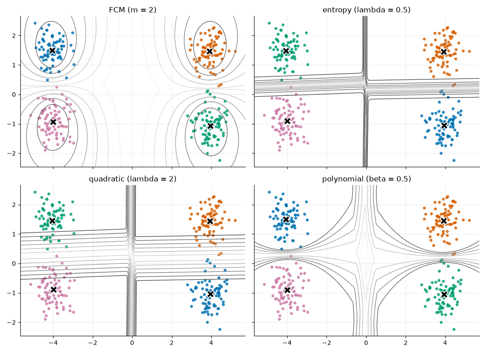
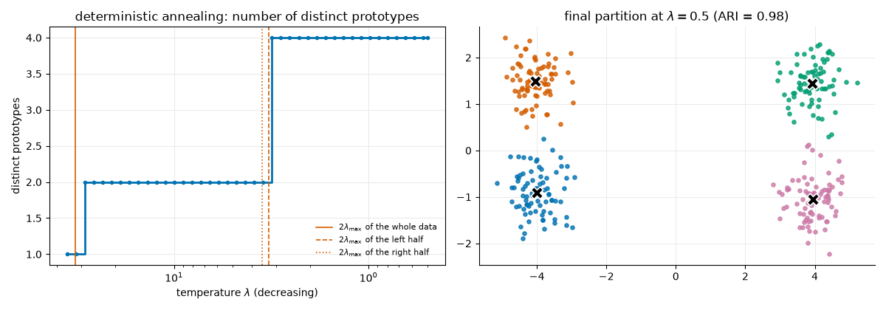
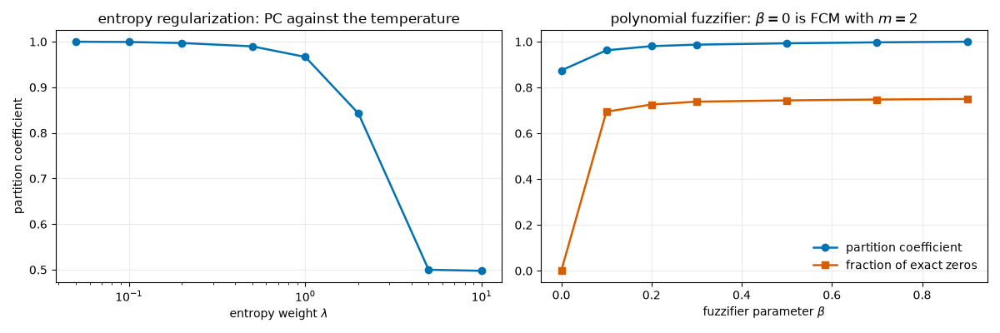

Note
Go to the end to download the full example code or to run this example in your browser via Binder.
What makes a partition fuzzy: fuzzifiers, regularization, and annealing#
Fuzzy c-means turns the hard c-means functional into a fuzzy one by raising the memberships to the power \(m\). This is only one of several mechanisms. Adding an entropy term \(\lambda\sum_{ik}\mu_{ik}\log\mu_{ik}\) to the hard functional gives Gaussian-shaped memberships \(\mu_{ik}\propto\exp(-D^2_{ik}/\lambda)\); a quadratic term \(\lambda\sum_{ik}\mu_{ik}^2\) gives piecewise linear memberships; and the polynomial fuzzifier of Klawonn and Höppner, \(g(\mu)=\frac{1-\beta}{1+\beta}\mu^2+\frac{2\beta}{1+\beta}\mu\), replaces \(\mu^m\) by a function with a positive slope at zero. The last two produce exact zeros: a sample does not belong at all to a cluster on the far side of the data, whereas the FCM membership never vanishes. The entropy functional is also the free energy of deterministic annealing: lowering the temperature \(\lambda\) from a large value lets the prototypes split at critical temperatures, which reveals the cluster structure scale by scale.
Membership functions along a line#
Three prototypes sit at \(v_1=0\), \(v_2=1\), and \(v_3=4\) on a line. For every mechanism we evaluate the memberships of the points \(x\in[-2,6]\) in the three clusters with the closed-form membership formula of that mechanism. The parameters are chosen so that the membership functions have comparable widths between the two close prototypes.
import matplotlib.pyplot as plt
import numpy as np
from sklearn.metrics import adjusted_rand_score
from fuzzyclust.cluster import (
FCM,
PolynomialFuzzifierFCM,
RegularizedFCM,
entropy_memberships,
polynomial_memberships,
quadratic_memberships,
)
from fuzzyclust.plotting import PALETTE, plot_clusters, plot_membership_contours
# [snippet:membership_line]
x = np.linspace(-2.0, 6.0, 801)
v = np.array([0.0, 1.0, 4.0])
d2 = (x[:, None] - v[None, :]) ** 2 # squared distances to the three prototypes
mechanisms = {
r"FCM, $\mu^m$ with $m=2$": 1.0 / (d2 + 1e-10) / np.sum(1.0 / (d2 + 1e-10), axis=1, keepdims=True),
r"entropy, $\lambda=0.3$": entropy_memberships(d2, lam=0.3),
r"quadratic, $\lambda=0.5$": quadratic_memberships(d2, lam=0.5),
r"polynomial fuzzifier, $\beta=0.2$": polynomial_memberships(d2, beta=0.2),
}
# [/snippet:membership_line]
fig, axes = plt.subplots(2, 2, figsize=(11, 6.4), sharex=True, sharey=True)
for ax, (name, U) in zip(axes.ravel(), mechanisms.items(), strict=True):
for i in range(3):
ax.plot(x, U[:, i], lw=2.0, color=PALETTE[i], label=f"$\\mu_{i + 1}(x)$")
for vi in v:
ax.axvline(vi, color="0.6", lw=0.8, ls="--")
zero = (U == 0).any(axis=1)
ax.fill_between(x, -0.11, -0.06, where=zero, color="0.35", step="mid", lw=0)
ax.set_title(name)
ax.set_ylim(-0.13, 1.05)
ax.grid(True, color="0.92")
for ax in axes[1]:
ax.set_xlabel("$x$")
for ax in axes[:, 0]:
ax.set_ylabel("membership")
axes[0, 0].legend(frameon=False, loc="center right")
plt.tight_layout()

The FCM memberships are positive everywhere and tend to \(1/c\) far away from all prototypes. The entropy memberships are softmax functions of \(-D^2/\lambda\): a sample far to the right belongs fully to the rightmost cluster, because the difference of the squared distances, not their ratio, decides. The quadratic and polynomial memberships are exactly zero for at least one cluster wherever the dark bar below the curves is drawn: between \(v_1\) and \(v_2\) the third cluster has no influence at all, and near \(v_3\) the partition is crisp. Fuzziness is kept where it carries information, in the overlap of neighboring clusters.
Partitions of the plane#
Four groups of equal spread, arranged as a left and a right pair. The fraction of exact zeros in the membership matrix and the agreement with the generating labels are printed for the four mechanisms; the contours are those of the maximal membership.
rng = np.random.RandomState(0)
group_centers = np.array([[-4.0, -1.0], [-4.0, 1.5], [4.0, -1.0], [4.0, 1.5]])
X = np.vstack([c + 0.45 * rng.randn(80, 2) for c in group_centers])
y = np.repeat(np.arange(4), 80)
# [snippet:fit]
models = {
"FCM (m = 2)": FCM(n_clusters=4, random_state=0, n_init=3),
"entropy (lambda = 0.5)": RegularizedFCM(n_clusters=4, regularization="entropy", lam=0.5, random_state=0, n_init=3),
"quadratic (lambda = 2)": RegularizedFCM(n_clusters=4, regularization="quadratic", lam=2.0, random_state=0, n_init=3),
"polynomial (beta = 0.5)": PolynomialFuzzifierFCM(n_clusters=4, beta=0.5, random_state=0, n_init=3),
}
for name, model in models.items():
model.fit(X)
zeros = np.mean(model.membership_ == 0)
ari = adjusted_rand_score(y, model.labels_)
print(f"{name:24s} exact zeros = {zeros:5.1%} ARI = {ari:.2f} iterations = {model.n_iter_}")
# [/snippet:fit]
fig, axes = plt.subplots(2, 2, figsize=(11, 8.0), sharex=True, sharey=True)
for ax, (name, model) in zip(axes.ravel(), models.items(), strict=True):
plot_membership_contours(model, X, ax=ax, labels=False)
ax.set_title(name)
plt.tight_layout()

FCM (m = 2) exact zeros = 0.0% ARI = 0.98 iterations = 9
entropy (lambda = 0.5) exact zeros = 0.0% ARI = 0.98 iterations = 8
quadratic (lambda = 2) exact zeros = 70.8% ARI = 0.98 iterations = 10
polynomial (beta = 0.5) exact zeros = 74.4% ARI = 0.98 iterations = 8
All four recover the groups. The FCM contours have the familiar ripples around every prototype. The entropy contours are smooth, and the partition is nearly crisp away from the borders. The quadratic and polynomial partitions are flat (membership one) inside every group and fuzzy only in the strips between neighboring groups, with about three quarters of the membership matrix exactly zero.
Deterministic annealing: phase transitions#
With annealing=True the entropy-regularized algorithm starts at a
temperature above the critical value \(2\lambda_{\max}(\mathbf{F}_0)\)
of the whole data set, where all prototypes coincide at the grand mean,
and lowers \(\lambda\) geometrically, starting each step from the
previous solution. The number of distinct prototypes jumps when the
temperature falls below the critical temperature of a cluster,
\(2\lambda_{\max}\) of its covariance: first the left and right halves
separate, then each half splits into its two groups.
# [snippet:annealing]
da = RegularizedFCM(n_clusters=4, lam=0.5, annealing=True, anneal_rate=0.9, tol=1e-6, random_state=0).fit(X)
history = da.cluster_history_ # one row per temperature: lam, n_effective, objective
# [/snippet:annealing]
F0 = np.cov(X, rowvar=False)
halves = [X[X[:, 0] < 0], X[X[:, 0] > 0]]
t_split = [2 * np.linalg.eigvalsh(F0)[-1]] + [2 * np.linalg.eigvalsh(np.cov(h, rowvar=False))[-1] for h in halves]
print("critical temperatures (whole data, left half, right half):", np.round(t_split, 2))
print(history[history["n_effective"].diff() != 0].round(2).to_string(index=False))
fig, axes = plt.subplots(1, 2, figsize=(12, 4.2))
ax = axes[0]
ax.step(history["lam"], history["n_effective"], where="post", color=PALETTE[0], lw=2.0)
ax.plot(history["lam"], history["n_effective"], "o", ms=3, color=PALETTE[0])
for t, ls, name in zip(t_split, ("-", "--", ":"), ("whole data", "left half", "right half"), strict=True):
ax.axvline(t, color=PALETTE[1], ls=ls, lw=1.2, label=rf"$2\lambda_{{\max}}$ of the {name}")
ax.legend(frameon=False, loc="lower right", fontsize=8)
ax.set_xscale("log")
ax.invert_xaxis()
ax.set_xlabel(r"temperature $\lambda$ (decreasing)")
ax.set_ylabel("distinct prototypes")
ax.set_title("deterministic annealing: number of distinct prototypes")
ax.grid(True, color="0.92")
plot_clusters(X, da.labels_, centers=da.cluster_centers_, ax=axes[1], legend=False)
axes[1].set_title(f"final partition at $\\lambda={da.lam_:g}$ (ARI = {adjusted_rand_score(y, da.labels_):.2f})")
plt.tight_layout()

critical temperatures (whole data, left half, right half): [32.19 3.27 3.53]
lam n_effective objective
35.41 1 -10034.71
28.69 2 -7131.07
3.14 4 -94.63
Parameter study: the width of the fuzzy region#
For the entropy regularization the weight \(\lambda\) is a squared length (a temperature). For the polynomial fuzzifier, \(\beta\) bounds the ratio of distances: a sample at distance \(D_1\) from its nearest prototype has zero membership in every cluster farther away than \(D_1/\sqrt{\beta}\). We record the partition coefficient and the fraction of exact zeros.
lams = np.array([0.05, 0.1, 0.2, 0.5, 1.0, 2.0, 5.0, 10.0])
betas = np.array([0.0, 0.1, 0.2, 0.3, 0.5, 0.7, 0.9])
pc_ent = [np.mean(np.sum(RegularizedFCM(n_clusters=4, lam=lam, random_state=0, n_init=3).fit(X).membership_**2, axis=1))
for lam in lams]
pc_poly, zeros_poly = [], []
for beta in betas:
pf = PolynomialFuzzifierFCM(n_clusters=4, beta=beta, random_state=0, n_init=3).fit(X)
pc_poly.append(np.mean(np.sum(pf.membership_**2, axis=1)))
zeros_poly.append(np.mean(pf.membership_ == 0))
fig, axes = plt.subplots(1, 2, figsize=(12, 4.0))
axes[0].plot(lams, pc_ent, marker="o", color=PALETTE[0], lw=1.8)
axes[0].set_xscale("log")
axes[0].set_xlabel(r"entropy weight $\lambda$")
axes[0].set_ylabel("partition coefficient")
axes[0].set_title("entropy regularization: PC against the temperature")
axes[1].plot(betas, pc_poly, marker="o", color=PALETTE[0], lw=1.8, label="partition coefficient")
axes[1].plot(betas, zeros_poly, marker="s", color=PALETTE[1], lw=1.8, label="fraction of exact zeros")
axes[1].set_xlabel(r"fuzzifier parameter $\beta$")
axes[1].set_title(r"polynomial fuzzifier: $\beta=0$ is FCM with $m=2$")
axes[1].legend(frameon=False)
for ax in axes:
ax.grid(True, color="0.92")
plt.tight_layout()
for lam, p in zip(lams, pc_ent, strict=True):
print(f"entropy lambda = {lam:5.2f} PC = {p:.3f}")
for beta, p, z in zip(betas, pc_poly, zeros_poly, strict=True):
print(f"polynomial beta = {beta:.1f} PC = {p:.3f} exact zeros = {z:.1%}")

entropy lambda = 0.05 PC = 1.000
entropy lambda = 0.10 PC = 0.999
entropy lambda = 0.20 PC = 0.997
entropy lambda = 0.50 PC = 0.990
entropy lambda = 1.00 PC = 0.967
entropy lambda = 2.00 PC = 0.843
entropy lambda = 5.00 PC = 0.500
entropy lambda = 10.00 PC = 0.498
polynomial beta = 0.0 PC = 0.874 exact zeros = 0.0%
polynomial beta = 0.1 PC = 0.962 exact zeros = 69.5%
polynomial beta = 0.2 PC = 0.981 exact zeros = 72.6%
polynomial beta = 0.3 PC = 0.987 exact zeros = 73.8%
polynomial beta = 0.5 PC = 0.993 exact zeros = 74.4%
polynomial beta = 0.7 PC = 0.997 exact zeros = 74.8%
polynomial beta = 0.9 PC = 1.000 exact zeros = 75.0%
The partition coefficient of the entropy-regularized partition stays near one up to \(\lambda\approx1\) and drops to about \(1/2\) for \(\lambda\ge5\): above the critical temperatures of the halves (3.3 and 3.5) the two prototypes of every half coincide, so the four prototypes describe only two clusters. This is the same phase transition that the annealing run crossed from the other side. The polynomial fuzzifier produces exact zeros as soon as \(\beta>0\) (70 % to 75 % of the entries for four well-separated groups, the maximum being \((c-1)/c\)), and a larger \(\beta\) then only sharpens the borders.
Take-away. The exponent \(m\) is only one way to fuzzify c-means. Entropy regularization gives Gaussian memberships controlled by a temperature \(\lambda\) measured in squared data units, and, run as deterministic annealing, it shows at which scales the data split into clusters. The quadratic regularization and the polynomial fuzzifier keep the partition fuzzy only between neighboring clusters and assign exact zeros elsewhere, which removes the influence of far-away clusters on the prototypes and makes the membership matrix sparse. \(\beta=0.5\) and a \(\lambda\) of the order of the squared cluster radius are sensible starting values.
Total running time of the script: (0 minutes 1.015 seconds)